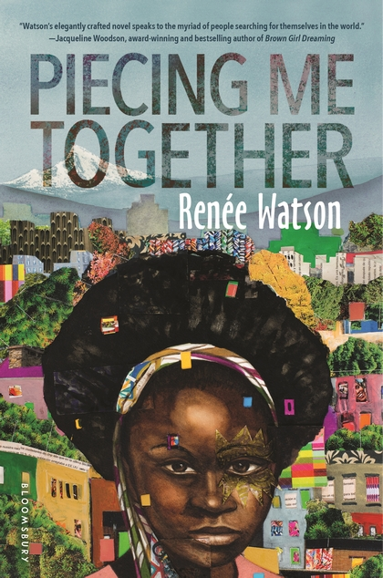

Inspired By Renée Watson's Novel Piecing Me Together

"Art is something much greater than anything material; it is a literal reflection of the human soul that created it.”
~ Michael Holman
This summer OES employees read the realistic fiction book Piecing Me Together. In August they gathered and discussed the main character’s lived experience. What experiences did Jade, the main character, have as a black, female, cisgender student from a low income home?
The employees looked inward and used artifacts and materials to explore their own identities. Here are the results. They reflect the diversity of our experiences and identities as the adults in this community that support students. What do you notice in these pieces? What intrigues you?
A theme that arose as employees discussed the book was assumptions. Human beings are assumptive. They make judgement and assumptions all the time. What assumptions are disrupted when you look closely at these pieces?
Renée Watson will visit us on October 12, 2017.